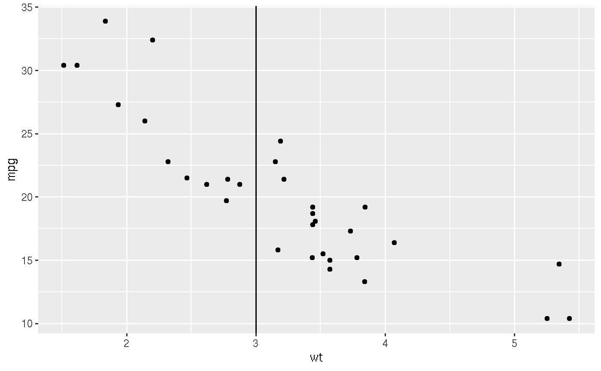
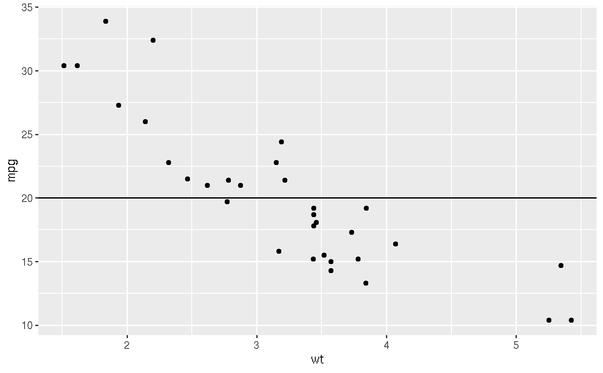

This geom is based on the source code of ' geom_hline and geom_vline.
geom_hvline(mapping = NULL, data = NULL, position = "identity", show.legend = FALSE, ...)
| mapping | The aesthetic mapping, usually constructed with
|
|---|---|
| data | A layer specific dataset - only needed if you want to override the plot defaults. |
| position | The position adjustment to use for overlapping points on this layer |
| show.legend | should a legend be drawn? (defaults to |
| ... | other arguments passed on to |
a geom_hvline layer
The goal is to determine the line to be either vertial or horizontal based on the 1-d data provided in this layer.
@section Aesthetics:
geom_vline() understands the following aesthetics (required aesthetics are in bold):
xintercept
alpha
colour
group
linetype
size
vignette("ggplot2-specs").
p <- ggplot(mtcars, aes(x = wt, y = mpg)) + geom_point() # vline p + geom_hvline(data = data.frame(wt= 3))